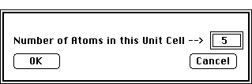

Desktop Manual
Desktop Manual
PATH...Parameter Menu:Define Unit Cells:Unit
Cell Dialog Box::(Set # Atoms)

- The Set # of Atoms Dialog Box is activated from within the Crystal
definition Dialog Box and is accessed by clicking on the Set # Atoms button.
This dialog specifies the total number of atomic positions for the current
crystal. The maximum number of allowed atoms is 32,0000. However, memory
limitations make the use of such large crystals impractical.
- If, the newly set number of atoms is greater than was previously defined,
the appropriate number of atoms will be added using the most recently defined
last atom in the list as a template. If the new number of atoms is less
than the previous number of atoms, the appropriate number of atoms will
be subtracted, starting with the highest numbered atom.
Author: J.ames T. Stanley
Distributed
By: Virtual Labs
Last Updated:1/12/96 Sat, Apr 27, 1996